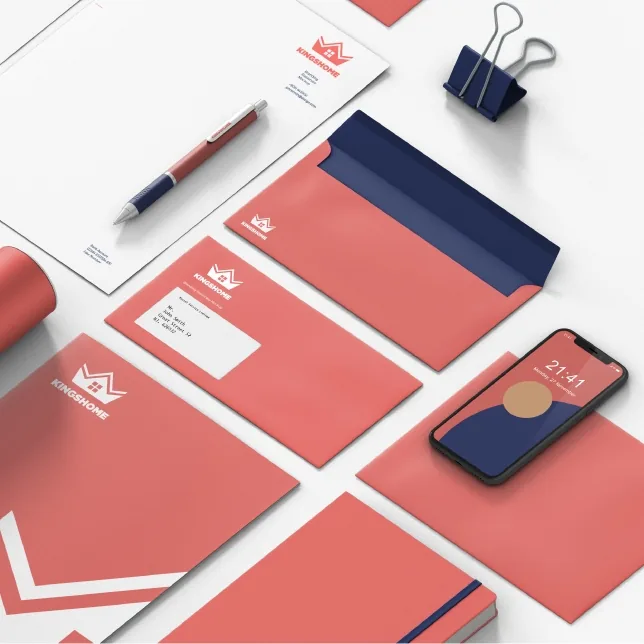

Inbound WhatsApp
Uso de distintos números a nivel mundial. Múltiples clientes con múltiples asesores. Formularios dinámicos para datos adicionales o tipificaciones. Inserción sencilla en páginas web.
Es un servicio ininterrumpido de chats sobre tu página web, para atender a tus clientes o capturar leads a través de las múltiples campañas que realices. Además, puedes integrar los canales de chat con llamadas y videollamadas.

Todos los mensajes de bienvenida y alertas que puedan generar una mejor experiencia al cliente.
Configura el horario comercial de tu negocio para que el chatbot responda de manera personalizada cuando no estén disponibles tus asesores comerciales.
El diseño de los flujos de atención de los bots permite respuestas que orientan al cliente sobre tus productos o servicios. Si el bot requiere más orientación, se deriva a un agente humano para que se complete la atención y el cliente quede satisfecho.
Nuestro sistema puede identificar los números de tus clientes y derivarlos rápidamente con agentes especializados por WhatsApp, sin hacerlos pasar por un menú de opciones. Y si el cliente desea contactar al mismo agente por WhatsApp mediante un ID, lo derivamos al mismo agente de la atención.
Para toda esta gestión se apoya en un sistema de CRM.
Uso de distintos números a nivel mundial. Múltiples clientes con múltiples asesores. Formularios dinámicos para datos adicionales o tipificaciones. Inserción sencilla en páginas web.
Mensajes y plantillas preconfigurados. Interacciones salientes simultáneas por un mismo asesor. Transferencia de archivos (imágenes, audio, video y más). Envío de emojis.
Encuesta de satisfacción con preguntas personalizadas y derivación automática o manual hacia encuestas de satisfacción.
Personalización de árboles de decisión sin restricción de niveles, con opciones de derivación hacia campañas y hacia asesores.
Personalización de mensajes: bienvenida, fuera de horario y más.
Traslado de chats a otro nivel de atención.
Nuestro sistema puede capturar los registros de los leads 24×7 y así ubicar a nuestros potenciales clientes.
Nuestros sistemas de mensajería pueden cambiar de canal para dar una mejor experiencia al cliente a través de videollamadas o llamadas con ejecutivos especializados.
De manera fácil y sencilla siempre estaremos para atender a los clientes por los canales digitales, a través de la página web, WhatsApp, etc.
Nuestra omnicanalidad permite que tus clientes se comuniquen de manera sencilla y que la atención por bots o por agentes humanos sea más sencilla.
Un ejecutivo de servicio tomará la gestión de la conversación en lugar del chatbot cuando el cliente lo solicite o cuando se identifiquen oportunidades de venta.
De manera fácil podrás diseñar los formularios con los campos que necesitas, definiendo tipos de datos y validaciones que te permitan tener una base de datos impecable y reportes para las ventas.
Mediante nuestros widgets podemos generar en tiempo real videollamadas y chats por WhatsApp, Messenger, chat web, etc., insertados desde las páginas web o tiendas en línea para apoyar una venta con un bot o ejecutivo comercial.
Integra tu sistema con nuestra API para procesos de self-service para tus clientes a través de WhatsApp: ver fechas de pago, saldos de algún servicio, cambio de planes, etc. Tenemos integración con WhatsApp Business API y apoyamos al cliente en las altas.
De manera fácil podemos implementar FAQs para tus redes sociales y dar respuestas inmediatas, e incluir imágenes para seleccionar respuestas u orientar a los clientes.
Podemos integrarnos con CRMs como Salesforce, Microsoft Dynamics, etc. Nuestra integración con WhatsApp mediante una API permite la consulta, el registro de eventos, la automatización y el control de flujo con cualquier sistema que soporte REST. Contamos con seguridad para el acceso a nuestra API y somos compatibles con todos los estándares de seguridad.
Escríbenos para mayor información.